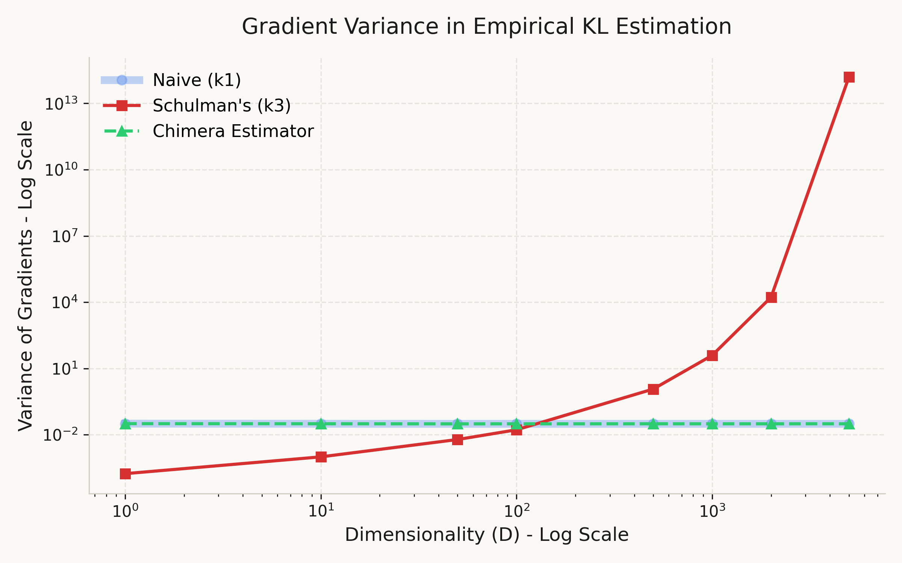
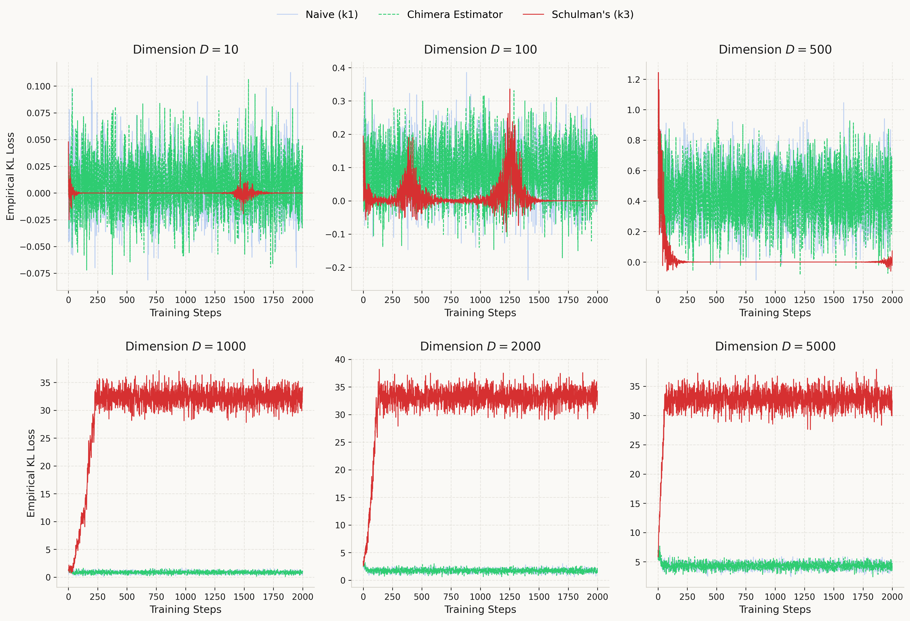

The Chimera Estimator
What if we used k₃ going forward and k₁ going backward?
Background
In 2020, John Schulman wrote a lovely blog post about Monte Carlo estimators for KL divergence. The setup is simple: you have samples from q, you can evaluate both \log p(x) and \log q(x), and you want to estimate \text{KL}[q \| p]. He compared three estimators, all functions of the ratio r = p(x)/q(x):
\boldsymbol{k_1 = \log r} — the naive estimator. Unbiased, but half the samples come out negative even though KL is always positive. High variance.
\boldsymbol{k_2 = \tfrac{1}{2}(\log r)^2} — biased but remarkably low variance. It's an f-divergence that agrees with KL up to second order when p \approx q.
\boldsymbol{k_3 = (r - 1) - \log r} — the star of the post. Unbiased, always non-negative, and low variance. It measures the gap between \log(x) and its tangent line, which is a Bregman divergence. Schulman showed it has roughly the same standard deviation as k_2 while being unbiased — strictly better.
The post is clean and the conclusion seems definitive: just use k_3. But there's a catch that only shows up when you actually optimize with it.
The Math - Problem with k₃ in High Dimensions
Schulman's analysis focused on the forward properties of each estimator — bias and variance of the estimated value. That's the right thing to care about if you're using KL as a diagnostic. But if you're using it as a loss function and optimizing with gradient descent, what matters is the variance of the gradients.
Let's look at the gradients. For k_1 = \log r, the gradient with respect to the parameters of p is simply \nabla \log p(x) — no dependence on r. For k_3 = (r-1) - \log r, the gradient picks up a factor of (r - 1):
\nabla k_3 = (r - 1) \, \nabla \log p(x)
Here's the problem. In a D-dimensional setting with factorized distributions, \log r = \sum_{d=1}^{D} \log \frac{p_d(x_d)}{q_d(x_d)}, so r = \exp(\text{sum of } D \text{ terms}). Even when each term is small, the sum grows with D, and the exponential makes r fluctuate wildly. The factor (r-1) injects this noise directly into the gradient.
The result is that the variance of \nabla k_3 grows exponentially with dimension, while \nabla k_1 stays flat. In our experiments with p = \mathcal{N}(\mu, I) and q = \mathcal{N}(0, I) at \mu = 0.05, the gradient variance of k_3 goes from 10^{-4} at D=1 to 10^{14} at D=5000. That's not a usable gradient.
The Chimera Estimator
So k_3 has the better forward value (non-negative, unbiased, low variance) and k_1 has the better gradient (no r factor, stable across dimensions). The natural question: can we get both?
Yes, with a one-line trick. Define:
\mathcal{L}_{\text{chimera}} = \text{sg}(k_3) + k_1 - \text{sg}(k_1)
where \text{sg}(\cdot) denotes the stop-gradient operator (i.e. .detach() in PyTorch). Let's verify this does what we want:
Forward pass: \text{sg}(k_3) evaluates to k_3, and the k_1 - \text{sg}(k_1) terms cancel to zero. So the loss value equals k_3.
Backward pass: \text{sg}(k_3) has zero gradient, and \text{sg}(k_1) is a constant. Therefore, what remains is \nabla k_1.
In PyTorch, this is:
loss_k1 = log_r.mean()
loss_k3 = (r - 1.0 - log_r).mean()
loss = loss_k3.detach() + loss_k1 - loss_k1.detach()
The trick itself is nothing exotic — stop-gradient is used all over the place in reinforcement learning baselines and contrastive learning. The point here is just that it's the right tool for this particular problem, and it cleanly separates the forward and backward behavior of a KL estimator.
Experiments
We test with a simple setup: p = \mathcal{N}(\mu, I) and q = \mathcal{N}(0, I) in D dimensions, with \mu initialized at 0.05. The true KL is \tfrac{1}{2}\|\mu\|^2, so the optimum is at \mu = 0. We sample with the reparameterization trick using a batch size of 32.
Experiment 1: Gradient variance.
For each dimensionality D \in \{1, 10, 50, 100, 500, 1000, 2000, 5000\}, we compute the gradient of each estimator 300 times from a fixed parameter and measure the variance across trials. No optimization is performed — this isolates the noise in the gradient signal itself.

From Figure 1, the gradient variance of k_3 grows exponentially with dimension — roughly 18 orders of magnitude from D=1 to D=5000. Meanwhile, k_1 and Chimera remain essentially constant at ~0.031, completely independent of D. This confirms that the (r-1) factor in \nabla k_3 is the sole source of the instability, and that Chimera successfully avoids it.
Experiment 2: Training dynamics.
We optimize \mu with Adam (lr=0.02) for 2000 steps, tracking the empirical KL loss. We run this for D \in \{10, 100, 500, 1000, 2000, 5000\}.

The results match the prediction: at high dimensions where k_3 diverges, Chimera converges reliably thanks to inheriting the stable gradients of k_1. At low dimensions, k_3 actually has lower gradient variance and converges faster — Chimera pays a small cost there by using the noisier k_1 gradient. The tradeoff favors Chimera when D is large enough for k_3 to become unstable. The code for all experiments is available on GitHub.
Discussion
Let's be honest about what Chimera is and isn't. The stop-gradient trick that makes it work is well-known, and the fact that the forward value equals k_3 is immediate from the construction — there's no deep insight there. The observation that k_3's gradient is problematic is also not unique to this post — recent work in the RLHF community has independently reached similar conclusions. Huang et al. (2025) showed that k_3 as a loss is a biased first-order approximation of the true reverse KL gradient, with variance tied to the chi-squared divergence. Paischer et al. (2025) demonstrated that k_3 in reward shaping leads to training collapse in LLM fine-tuning. Wang et al.(2025) provided a detailed analysis of gradient correctness across estimators in on-policy and off-policy settings. Our contribution is narrower: a simple toy demonstration of the dimensional scaling behavior, and a concrete one-line fix via the Chimera decomposition.
There are also clear limitations. In low dimensions, k_3 is strictly better — its gradient variance is lower than k_1's, and it converges faster. Chimera only becomes worth using once D is large enough for the (r-1) factor to cause trouble. In our setup, that transition happens somewhere around D = 100~500.
Where might this matter in practice? Any setting where KL divergence is optimized as a loss in high-dimensional parameter spaces: VAEs with large latent spaces, policy optimization in reinforcement learning with high-dimensional action spaces, or distillation objectives between large models. In all of these, the gradient is what drives learning, and an estimator that looks good on paper but produces unusable gradients is not actually good.
A natural next step would be an adaptive version — use k_3 gradients when D is small and switch to Chimera when variance exceeds a threshold. We leave this for future work :)
Citation
title={The Chimera Estimator: Fixing KL Divergence Gradients in High Dimensions},
author={Kirato Yoshihara},
year={2026},
url={https://kiratoyoshihara.github.io/essays/chimera-kl.html}
}